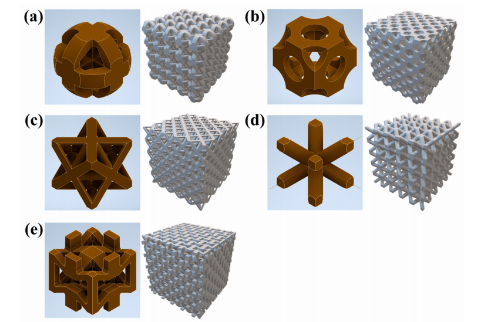
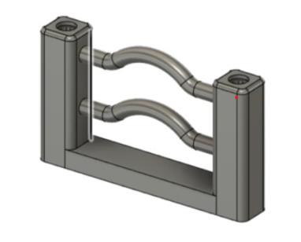
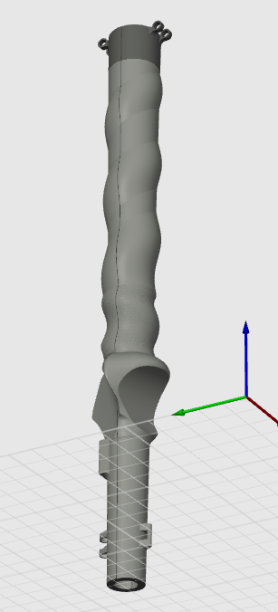
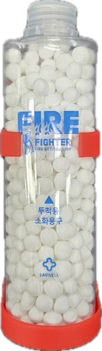

조선이공대 기계설계과를 졸업하고 경상국립대 기계공학부에 편입해 4학년에 재학 중이다. 전통 건축 문양에서 착안한 격자 구조를 설계하고 압축시험으로 기존 구조와 비교한 연구로 국제학술지 Materials에 공동 제1저자 논문을 게재했고, 국제학술대회에서 직접 발표했다. 종합설계에서는 팀장으로 스마트 동파 방지 수전의 일체형 구조를 설계해 캡스톤디자인 경진대회 대상을 받았다. 2023년에는 어린이 보호구역 LED 장치 프로젝트에서 기획과 하드웨어 설계를 맡았고, 두 프로젝트 모두 3D 프린팅으로 시제품을 만들어 시험했다.I graduated from the Department of Mechanical Design at Chosun College of Science & Technology and transferred to the School of Mechanical Engineering at Gyeongsang National University, where I am now a senior. I designed lattice structures inspired by traditional Korean architectural patterns and compared them with conventional structures through compression tests; this work was published in the international journal Materials with me as co-first author, and I presented it myself at an international conference. In Capstone Design, as team leader, I designed the integrated structure of a smart freeze-protection faucet, which won the Grand Prize at the capstone design competition. In 2023, I handled planning and hardware design for a children's protection-zone LED device. In both projects, we built prototypes with 3D printing and tested them.
전공·학업Coursework
종합설계Capstone Design2026-12026-1
스마트 동파 방지 수전 팀장, 일체형 수전 설계Team leader for the smart freeze-protection faucet; integrated faucet design
자체제작 격자구조 설계 및 제작Design and fabrication of a self-made lattice structure
사출금형설계Injection Mold Design조선이공대 2023-2Chosun College 2023-2
사출 금형 전체 어셈블리 설계Full injection mold assembly design
3D프린팅활용3D Printing Applications조선이공대 2023-1Chosun College 2023-1
3D프린팅운용 및 유지관리3D printer operation and maintenance
현장 경험Field experience
2025 하계Summer 2025
표준현장실습 — 선박용 감속기 제조 중소기업(동이공업)Standard field practicum — a small marine reduction-gear manufacturer (동이공업)
2025 동계Winter 2025
표준현장실습 — 스타트업에서 설계·디자인 전반 담당Standard field practicum — handled design and product design overall at a startup
2018.10~2020.072018.10–2020.07
입학 전 — (주)삼우코리아 금형 사상·제작Before college — mold finishing and fabrication at Samwoo Korea Co., Ltd.
대표 프로젝트Featured Projects
images/project1.png

01
경량 격자 구조(HH·PCJ) 설계 및 압축 특성 연구Design and Compressive Characterization of Lightweight Lattice Structures (HH·PCJ)
2026 · 경상국립대2026 · Gyeongsang National University
전통 건축 문양에서 착안한 격자 구조 2종을 설계하고, 기존 구조와 압축 특성을 비교했다.Designed two lattice structures inspired by traditional Korean architectural patterns and compared their compressive properties with conventional structures.
공동 제1저자 · Materials 게재 · ISATMP-26 Best Oral Presentation AwardCo-first author · Published in Materials · ISATMP-26 Best Oral Presentation Award
01
경량 격자 구조(HH·PCJ) 설계 및 압축 특성 연구Design and Compressive Characterization of Lightweight Lattice Structures (HH·PCJ)
2026 · 경상국립대2026 · Gyeongsang National University
배경Background
가벼우면서도 하중을 견디는 구조가 필요한 곳에는 격자 구조가 쓰인다. 우리 팀은 경복궁 향원정의 육각 평면과 전통 문살 패턴에서 착안한 새 격자 구조 HH와 PCJ를 제안하고, 기존 구조인 OT·BCC·HR과 압축 거동을 비교하는 연구를 지도교수를 포함한 5명이 진행했다.Lattice structures are used where a structure must be light yet bear loads. Our team proposed two new lattice structures, HH and PCJ, inspired by the hexagonal plan of Hyangwonjeong Pavilion at Gyeongbokgung Palace and traditional munsal (lattice window) patterns, and compared their compressive behavior with the conventional OT, BCC, and HR structures. Five people, including the advising professor, carried out the study.
내 역할My role
나는 학생 연구팀의 팀장이자 공동 제1저자로, 팀원들의 아이디어를 모아 형상 설계를 조율했다. 시편 출력, 압축시험, 원고 초안 작성을 맡았고, 국제학술대회에서 직접 구두발표했다.As student research team leader and co-first author, I gathered the team's ideas and coordinated the geometry design. I was responsible for printing specimens, compression testing, and drafting the manuscript, and I gave the oral presentation at an international conference myself.
과정과 어려움Process & challenges
공정한 비교를 하려면 재료량이 아니라 형상의 차이만 결과에 반영되어야 했다. 그래서 다섯 구조를 모두 단위 셀 8 mm, 재료 부피 약 20,000 mm³로 맞춰야 했는데, 새로 만든 형상의 부피와 질량을 기존 구조인 OT·BCC와 맞추는 일이 가장 까다로웠다.For a fair comparison, only differences in geometry, not in material amount, had to show up in the results. All five structures therefore had to share an 8 mm unit cell and a material volume of about 20,000 mm³, and matching the volume and mass of the new geometries with the conventional OT and BCC structures was the hardest part.
해결Solution
부재 두께를 바꿔 가며 30번 넘게 출력을 반복해 부피와 질량을 맞췄다. 완성한 PLA 시편은 구조별 3개씩 5 mm/min 속도로 압축시험했고, 응력–변형률 곡선과 변형 형태를 비교했다.I matched volume and mass by printing more than 30 times while adjusting member thickness. The finished PLA specimens were compression-tested at 5 mm/min, three per structure, and the stress–strain curves and deformation modes were compared.
결과Result
HH는 3.87 MPa로 다섯 구조 중 가장 높은 압축강도를 보였다(OT 3.67, PCJ 3.61, HR 3.36, BCC 1.82 MPa). 최대하중 이후에도 응력이 비교적 안정적으로 유지됐다. 연구 결과는 국제학술지 Materials에 게재됐고(2026.09.23), ISATMP-26에서 직접 발표해 Best Oral Presentation Award를 받았다(2026.10.25).HH showed the highest compressive strength of the five structures at 3.87 MPa (OT 3.67, PCJ 3.61, HR 3.36, BCC 1.82 MPa), and its stress remained relatively stable after peak load. The results were published in the international journal Materials (2026.09.23), and I presented them at ISATMP-26 and received the Best Oral Presentation Award (2026.10.25).
배운 점What I learned
수업에서 배운 응력 분석과 구조 해석을 실제 형상 비교에 적용하며, 형상 요소가 강도와 변형에 어떤 영향을 주는지 직접 확인했다.Applying the stress analysis and structural analysis I learned in class to a real geometry comparison, I saw first-hand how geometric features affect strength and deformation.
첨부Attachments
images/project1.png
다섯 격자 구조의 단위 셀과 격자 모델Unit cells and lattice models of the five structures
2026-1 · 종합설계 · 경상국립대2026-1 · Capstone Design · Gyeongsang National University
수온에 따라 밸브를 자동으로 열고 닫아, 필요한 때에만 물을 흘려 동파를 막는 수전을 개발했다.Developed a faucet that prevents freezing by automatically opening and closing a valve according to water temperature, letting water flow only when needed.
팀장 · 일체형 수전 설계 · 2026 경상국립대 캡스톤디자인 경진대회 대상Team leader · Integrated faucet design · Grand Prize, 2026 GNU Capstone Design Competition
02
스마트 동파 방지 수전Smart Freeze-Protection Faucet
2026-1 · 종합설계 · 경상국립대2026-1 · Capstone Design · Gyeongsang National University
배경Background
2023년 전국 수도계량기 동파는 17,104건이었고, 그중 약 40%가 서울에서 발생했다. 수도꼭지를 틀어 두는 기존 예방법은 물 낭비가 컸고, 열선 방식은 화재 위험과 전기료 부담이, 형상기억합금 밸브는 작동 온도를 조정할 수 없다는 한계가 있었다. 우리 팀은 진주의 한 아파트 단지(2,157세대)를 찾아 현장 조사와 거주자·관리자 인터뷰를 했고, 진주에는 동파 사례가 없어 수도권 사례를 추가로 조사했다.In 2023 there were 17,104 frozen water meters nationwide, about 40% of them in Seoul. The usual fix of leaving the tap running wasted a lot of water, heating cables carried fire risk and electricity costs, and shape-memory-alloy valves could not adjust their operating temperature. Our team visited an apartment complex in Jinju (2,157 households) for a field survey and interviews with residents and managers, and because Jinju had no freezing cases, we also looked into cases in the Seoul metropolitan area.
내 역할My role
나는 4명 팀의 팀장으로 과제를 총괄했고, 제어부와 밸브를 수전 몸체 안에 넣는 일체형 수전 설계를 맡았다. 탈착형 설계, 테스트베드 제작, 아두이노 제어는 팀원들이 나눠 맡았고, 산업용 밸브 기업인 피케이밸브엔지니어링에서 기밀성과 조립 공차에 대한 실무 자문을 받았다.As leader of a four-person team, I managed the overall project and designed the integrated faucet, which houses the control unit and valve inside the faucet body. Teammates divided the detachable design, test bed construction, and Arduino control, and we received practical advice on airtightness and assembly tolerances from PK Valve Engineering, an industrial valve company.
과정과 어려움Process & challenges
일체형 수전은 내부에 T자형 밸브를 넣어, 평상시 쓰는 수로와 동파 방지용 수로를 분리하는 구조로 설계했다. 소형 래칭 밸브는 구하기 어려웠고, 3D 프린팅 부품만으로는 기밀을 확보하기 어려워 시중 수도 부품과 결합했는데 이음부의 미세한 틈으로 누수가 생겼다. 과제가 봄·여름에 진행되어 실제 겨울 환경에서 시험할 수도 없었다.I designed the integrated faucet with an internal T-shaped valve that separates the everyday waterway from the freeze-protection waterway. Small latching valves were hard to find, and because 3D-printed parts alone could not ensure airtightness, we combined them with off-the-shelf plumbing parts, but small gaps at the joints caused leaks. The project also ran in spring and summer, so we could not test in real winter conditions.
해결Solution
기존 제품에서 래칭 밸브를 떼어 내고 직접 설계한 밸브 커버를 씌워 썼다. 0.6 mm 노즐과 내부 유로로 2~4.5 bar 수압에서 시간당 약 14.7 L만 흐르도록 CFD 해석으로 미리 검증했고, Blender로 물의 흐름을 시각화해 판단했다. 하우징에는 O링 압축률과 조립 공차를 반영했고, 누수 부위는 실리콘과 패킹으로 보완했다. 겨울 환경은 드라이아이스와 팬으로 계량기함을 모사한 테스트베드로 대신했다.We took the latching valve out of an existing product and fitted it with a valve cover we designed ourselves. CFD analysis verified in advance that only about 14.7 L per hour flows through a 0.6 mm nozzle and internal channel at 2–4.5 bar, and we visualized the water flow in Blender to support decisions. The housing reflected O-ring compression and assembly tolerances, and leaking areas were patched with silicone and packing. Winter conditions were replaced with a test bed that simulated a meter box using dry ice and a fan.
결과Result
테스트베드에서 물을 멈춘 정체군은 약 58분 뒤 얼었고, 물을 흘린 작동군은 -2℃ 환경에서도 얼지 않았다. 실제 수도계량기 옆에 센서를 달아 밸브 자동 개폐를 확인했고, 영하 10℃에서 1시간 동안 시스템이 정상 작동하는지도 시험했다. 이 결과로 2026학년도 경상국립대 캡스톤디자인 경진대회에서 대상을 받았다(2026.07.05).On the test bed, the stagnant group with no flow froze after about 58 minutes, while the operating group with flow did not freeze even at -2 ℃. We attached a sensor next to a real water meter to confirm automatic valve opening and closing, and also tested whether the system ran normally for one hour at -10 ℃. These results earned the Grand Prize at the 2026 Gyeongsang National University Capstone Design Competition (2026.07.05).
배운 점What I learned
수도 설비는 작은 오차로도 누수가 생기기 때문에 기밀성과 조립 공차가 제품의 핵심이라는 것을 확인했다. 실리콘과 패킹만으로는 완전한 방수에 한계가 있었고, 시제품과 상용 제품 사이의 차이를 줄이려면 사출 성형, 맞춤형 PCB, 소형 MCU 같은 방법이 필요하다는 것을 알게 됐다.I confirmed that airtightness and assembly tolerance are central to plumbing products, where even small errors cause leaks. Silicone and packing alone had limits for full waterproofing, and I learned that closing the gap between a prototype and a commercial product requires methods such as injection molding, custom PCBs, and compact MCUs.
첨부Attachments
images/project2.png
몸체형·탈착형 3D 설계도3D models of the integrated and detachable types
images/project2-sink.png
모의 싱크대 적용 사진Installed on a mock sink
images/project2-testbed.png
테스트베드 사진Test bed
images/project3.png

03
School-Zone Yellow Flag: RFID를 활용한 어린이 보호구역 LED 장치School-Zone Yellow Flag: RFID-Based LED Device for Children's Protection Zones
2023 · 조선이공대2023 · Chosun College of Science & Technology
어린이가 태그를 찍으면 보호구역 펜스 LED와 표지판이 켜져, 운전자가 어린이 통행을 미리 알 수 있게 했다.When a child taps a tag, LEDs on the protection-zone fence and sign light up so drivers know in advance that children are passing.
팀장 · 기획·하드웨어 설계 · 2023 LINC 3.0 캡스톤디자인 경진대회 대상(교육부장관상)Team leader · Planning & hardware design · Grand Prize (Minister of Education Award), 2023 LINC 3.0 Capstone Design Competition
03
School-Zone Yellow Flag: RFID를 활용한 어린이 보호구역 LED 장치School-Zone Yellow Flag: RFID-Based LED Device for Children's Protection Zones
2023 · 조선이공대2023 · Chosun College of Science & Technology
배경Background
운전자 시점에서 본 어린이 보호구역의 문제는 갑자기 뛰어드는 어린이, 불법 주정차로 가려진 시야, 어린이 안전에 대한 무감각이었다. 기존 대책인 속도 표시 표지판과 바닥 신호등은 설치비를 포함해 개당 약 586만 원과 1,507만 원이 들어, 이미 설치된 펜스와 표지판을 활용하는 저비용 방식을 찾았다.From a driver's point of view, the problems in children's protection zones were children suddenly running into the road, views blocked by illegally parked cars, and insensitivity to children's safety. Existing measures, speed display signs and floor traffic lights, cost about 5.86 million won and 15.07 million won each including installation, so we looked for a low-cost approach using the fences and signs already in place.
내 역할My role
나는 학생 8명 팀의 팀장으로 기획, 하드웨어 설계, 고정 장치 설계를 맡았다. 발표 자료를 직접 만들어 대회 발표도 했다.As leader of an eight-student team, I handled planning, hardware design, and mounting fixture design. I also made the presentation materials myself and gave the competition presentation.
과정과 어려움Process & challenges
아파트 출입구와 학교 정·후문에 RFID/NFC 인식 장치를 두고, 어린이가 키링형 태그를 인식시키면 펜스 상단 LED와 표지판이 켜지는 구조로 기획했다. 이를 구현하려면 회로와 통신 연동이 필요했는데, 팀에 전자 전공자가 없었다.We planned a structure in which RFID/NFC readers sit at apartment entrances and schools' front and back gates, and when a child taps a keyring tag, the LEDs on top of the fence and the sign light up. Building this required circuit and communication integration, but there were no electronics majors on the team.
해결Solution
스타트업 대표에게 자문을 받으며 회로와 통신 연동을 익혔고, 아두이노 코딩과 전기 배선은 산업체(8793 IOT STUDIO)의 지원을 받았다. 서울 대치초등학교 주변 어린이 보호구역을 조사해 보호구역 모형을 2D로, 펜스용 LED를 3D로 설계하고 3D 프린터로 출력했다. 학부모 인터뷰 의견도 설계에 반영했다.I learned circuit and communication integration with advice from a startup CEO, and the industry partner (8793 IOT STUDIO) supported the Arduino coding and electrical wiring. I surveyed the children's protection zone around Daechi Elementary School in Seoul, designed the protection-zone model in 2D and the fence LED in 3D, and printed them on a 3D printer. Feedback from parent interviews was also reflected in the design.
결과Result
인식 장치, 펜스용 LED, 키링 태그, 어린이 보호구역 모형을 완성했다. 키링을 배포해 작동과 전력 공급을 현장에서 시험했고, 2023 LINC 3.0 캡스톤디자인 경진대회에서 대상(교육부장관상)을 받았다(2023.11.08).We completed the reader, fence LED, keyring tags, and a children's protection-zone model. We handed out the keyrings and tested operation and power supply on site, and received the Grand Prize (Minister of Education Award) at the 2023 LINC 3.0 Capstone Design Competition (2023.11.08).
배운 점What I learned
어린이 보호구역 안전사고라는 사회 문제에 기술로 해결 방안을 제시하는 경험을 하면서, 설계가 사회에 기여할 수 있다는 점을 체감했다.Proposing a technical solution to the social problem of accidents in children's protection zones, I felt that design can contribute to society.
첨부Attachments
images/project3.png
펜스용 LED 3D 설계도3D model of the fence LED
images/project3-model.png
어린이 보호구역 모형 사진Children's protection-zone model
기타 프로젝트Other Projects
images/etc1.png

사용자 맞춤형 골프 그립Custom-Fit Golf Grip
2025 · 경상국립대2025 · Gyeongsang National University
팀장Team leader
경상국립대 3D프린팅 경진대회 대상Grand Prize, GNU 3D Printing Competition
2024 · 조선이공대2024 · Chosun College of Science & Technology
대표학생(팀장)Lead student (team leader)
대표학생(팀장)으로 토양 상태 측정기 개발 과제를 이끌었다. Inventor로 외형을 설계하고 여러 차례 출력하며 수정했다.As lead student (team leader), I led the development of a soil condition meter. I designed the exterior in Inventor and revised it through several rounds of printing.
DigiTect 디지텍상, ICT 창의융합 캡스톤 장려상, 지학관 소셜벤처 우수상, step-up 창업경진대회 우수상, 스마트팩토리 컨소시엄 입상, JOY 페스티벌 장려상DigiTect Award, ICT Creative Convergence Capstone Encouragement Award, Social Venture Idea Contest Excellence Award, Step-up Startup Competition Excellence Award, Smart Factory Consortium Prize, JOY Festival Encouragement Award
images/etc2.png

케미세라케미세라
20242024
팀원Team member
JOY 페스티벌 캡스톤디자인 경진대회 대상Grand Prize, JOY Festival Capstone Design Competition
images/etc4.png
SAFE HILIGHTERSAFE HILIGHTER
2023 · 조선이공대2023 · Chosun College of Science & Technology
차량 사고 시 형광 물질을 분사해 2차 사고를 막는 장치에서 시제품 설계·제작과 발표를 맡았다.For a device that sprays fluorescent material after a vehicle accident to prevent secondary accidents, I handled prototype design and fabrication and the presentation.
역량Skills
설계Design
3D CAD (Inventor, CATIA, SolidWorks)3D CAD (Inventor, CATIA, SolidWorks)
동파 방지 수전 일체형 설계, FBF 측정기 외형 설계(Inventor), CAD 과목(CATIA)Integrated faucet design, FBF meter exterior (Inventor), CAD course (CATIA)
2D 도면 (AutoCAD)2D Drawing (AutoCAD)
어린이 보호구역 모형 2D 설계, AutoCAD 실무과정 수료, 전산응용기계제도기능사2D design of the protection-zone model, AutoCAD practical course completed, Craftsman Computer-Aided Mechanical Drawing
동파 방지 수전 노즐 유량 검증(CFD), 전산해석실무 과목(COMSOL·ANSYS)Nozzle flow verification for the freeze-protection faucet (CFD), Computational Analysis Practice course (COMSOL, ANSYS)
BlenderBlender
동파 방지 수전 물 흐름 시각화Water-flow visualization for the freeze-protection faucet
제작·시험Fabrication & Testing
3D 프린팅3D Printing
격자 구조 시편(30회 이상 반복 출력), 어린이 보호구역 모형, 3D 프린팅 운용기능사Lattice specimens (printed 30+ times), protection-zone model, Craftsman 3D Printer Operation
압축시험Compression Testing
격자 구조 압축 특성 연구Compressive characterization of lattice structures
금형Molds
(주)삼우코리아 금형 사상·제작(2018~2020), 금형기능사, 사출금형 설계 명장 강의 250시간 이수Mold finishing and fabrication at Samwoo Korea Co., Ltd. (2018–2020), Craftsman Mold, 250 hours of lectures from an injection mold design master
ISATMP-26 영어 구두발표, LINC 3.0·광주 청년 리빙랩 발표자료 제작 및 발표English oral presentation at ISATMP-26; prepared and delivered presentations for LINC 3.0 and Gwangju Youth Living Lab
수상·자격Awards & Certifications
대표 수상Selected awards
2026.10.25ISATMP-26 Best Oral Presentation Award — 격자 구조 연구 (발표자)ISATMP-26 Best Oral Presentation Award — Lattice structure research (Presenter)
2026.07.05경상국립대 캡스톤디자인 경진대회 대상 — 스마트 동파 방지 수전 (팀장)Grand Prize, GNU Capstone Design Competition — Smart Freeze-Protection Faucet (Team leader)
2025.12.18경상국립대 3D프린팅 경진대회 대상 — 사용자 맞춤형 골프 그립 (팀장)Grand Prize, GNU 3D Printing Competition — Custom-Fit Golf Grip (Team leader)
2024.12.20JOY 페스티벌 캡스톤디자인 경진대회 대상 — 케미세라 (팀원)Grand Prize, JOY Festival Capstone Design Competition — 케미세라 (Team member)
2023.11.08LINC 3.0 캡스톤디자인 경진대회 대상(교육부장관상) — School-Zone Yellow Flag (팀장)Grand Prize (Minister of Education Award), LINC 3.0 Capstone Design Competition — School-Zone Yellow Flag (Team leader)
전공 선택Choosing my pathQ1. 왜 기계 설계 엔지니어를 목표로 하는가?Why do you aim to become a mechanical design engineer?
고등학교 때부터 직접 무언가를 만드는 일이 좋았고, 그 첫 단계가 설계라고 생각해 기계설계과에 진학했다. 재학 중 사출금형 설계 명장의 강의를 250시간 들으며 설계가 현업에서 어떻게 쓰이는지 알게 됐다.Since high school I have liked making things myself, and I saw design as the first step, so I entered a mechanical design department. There I took 250 hours of lectures from an injection mold design master and learned how design is used in industry.
전공 선택Choosing my pathQ2. 전문대 졸업 후 편입한 이유는?Why did you transfer after graduating from a junior college?
조선이공대 재학 중 여러 대회에 참가하며 전공 밖의 분야까지 경험했다. 그 과정에서 설계의 이론적 기반을 더 깊이 공부하고 싶어 경상국립대 기계공학부에 편입했다.At Chosun College I took part in many competitions and experienced fields outside my major. Along the way I wanted to study the theoretical foundations of design more deeply, so I transferred to the School of Mechanical Engineering at Gyeongsang National University.
대표 경험Key experienceQ3. 대표 프로젝트 하나를 고른다면 무엇이고, 왜인가?If you had to pick one featured project, which would it be and why?
경량 격자 구조 연구를 고른다. 형상 설계 조율부터 시편 출력, 압축시험, 논문 초안, 학회 발표까지 연구의 전 과정을 맡았고, 그 결과를 국제학술지와 학회에서 검증받았기 때문이다.The lightweight lattice structure study. I handled the whole research process, from coordinating the geometry design to printing specimens, compression testing, drafting the paper, and presenting at a conference, and the results were validated by an international journal and conference.
대표 경험Key experienceQ4. 해결하지 못하고 한계로 남은 경험이 있는가?Is there something you could not solve that remained a limitation?
스마트 동파 방지 수전에서 3D 프린팅 부품과 시중 수도 부품을 결합하자 이음부의 미세한 틈으로 누수가 생겼다. 실리콘과 패킹으로 보완했지만 완전한 방수까지는 확보하지 못했다. 이 경험으로 기밀성과 조립 공차가 수도 설비의 핵심이라는 것을 확인했고, 상용화하려면 사출 성형 같은 제작 방식이 필요하다고 판단했다.In the smart freeze-protection faucet, combining 3D-printed parts with off-the-shelf plumbing parts caused leaks through small gaps at the joints. We patched them with silicone and packing but could not achieve full waterproofing. This confirmed that airtightness and assembly tolerance are central to plumbing equipment, and I concluded that commercialization would need manufacturing methods such as injection molding.
협업CollaborationQ5. 팀장으로서 의견이 다를 때 어떻게 조율했는가?As team leader, how did you handle differing opinions?
격자 구조 연구에서는 팀원들의 형상 아이디어를 모은 뒤, 같은 부피와 질량 조건에서 비교할 수 있는 형태로 설계를 조율했다. 스마트 동파 방지 수전에서는 일체형 설계, 탈착형 설계, 테스트베드, 제어를 팀원별로 나눠 맡기고 전체 진행을 총괄했다.In the lattice study, I gathered the team's geometry ideas and coordinated the design into forms that could be compared under the same volume and mass. In the smart freeze-protection faucet, I divided the integrated design, detachable design, test bed, and control among team members and managed overall progress.
협업CollaborationQ6. 다른 전공자와 협업한 경험이 있는가?Have you worked with people from other majors?
어린이 보호구역 LED 장치는 기계설계, 기계, 생명환경공학, 자동화시스템 학과의 학생 8명이 함께 만들었다. 팀에 전자 전공자가 없어 스타트업 대표에게 자문을 받았고, 산업체의 지원도 받았다. FBF 스마트농업 측정기에서는 기계·전자·전기·생명환경화공 전공 학생 12명의 대표학생을 맡아, 소프트웨어를 맡은 협력 기업과 함께 작업했다.The children's protection-zone LED device was built by eight students from mechanical design, mechanical engineering, life and environmental engineering, and automation systems. With no electronics majors on the team, we got advice from a startup CEO and support from an industry partner. For the FBF smart-farming meter, I was lead student for 12 students in mechanical, electronic, electrical, and life and environmental chemical engineering, and worked with a partner company that handled the software.
도구ToolsQ7. 주로 쓰는 설계·해석 도구는 무엇인가?Which design and analysis tools do you mainly use?
3D 설계는 주로 Autodesk Inventor로 작업했다. 동파 방지 수전에서는 노즐의 물 배출량을 확인하려고 CFD 해석을 했고, Blender로 물의 흐름을 시각화해 판단했다. 2D 도면은 AutoCAD로 그렸고, 시제품은 주로 3D 프린팅으로 만들었다(3D 프린팅 운용기능사).I mainly used Autodesk Inventor for 3D design. For the freeze-protection faucet, I ran CFD analysis to check the nozzle's water discharge and visualized the flow in Blender to support decisions. I drew 2D drawings in AutoCAD and built prototypes mainly with 3D printing (Craftsman 3D Printer Operation).
도구ToolsQ8. 시제품은 어떻게 만들었고, 그 방식의 한계는 무엇이었나?How did you build prototypes, and what were the limits of that method?
시제품은 주로 3D 프린팅으로 만들었다. 격자 구조 시편을 30번 넘게 다시 출력해 조건을 맞췄고, 어린이 보호구역 모형과 동파 방지 수전도 출력해 제작했다. 3D 프린팅은 빠르고 비용이 적게 들었지만, 수전처럼 기밀이 필요한 부품에서는 정밀도와 방수에 한계가 있어 시중 수도 부품과 함께 써야 했다.I built prototypes mainly with 3D printing. I reprinted lattice specimens more than 30 times to match conditions, and also printed the protection-zone model and the freeze-protection faucet. 3D printing was fast and inexpensive, but for parts that need airtightness, like the faucet, it had limits in precision and waterproofing, so it had to be combined with off-the-shelf plumbing parts.
진로 계획Career planQ9. 앞으로의 진로 계획과 보완하고 싶은 역량은?What are your career plans, and what skills do you want to strengthen?
졸업 후 기계 설계 엔지니어로 일하는 것이 목표다. 프로젝트에서 설계·해석·제작을 해 봤지만, 설계 역량을 객관적으로 보여 줄 척도는 아직 부족하다고 느꼈다.My goal is to work as a mechanical design engineer after graduation. I have done design, analysis, and fabrication in projects, but I felt I still lack an objective measure that shows my design skills.
연락처Contact
이메일Email[공개용 이메일 확인 필요][Public email to be confirmed]